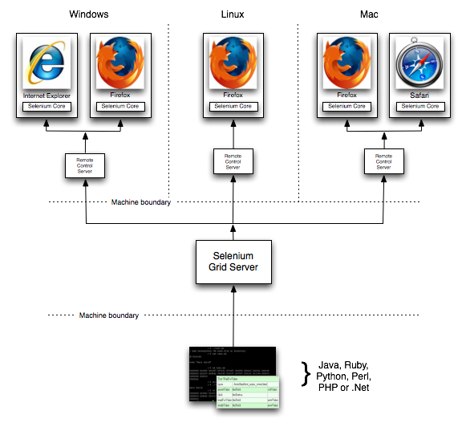

This additional server piece allows the several Remote Control servers to accessed in parallel by one or more driving processes. You may want to do this if you want to use scale to speed everything up, or because you need to test on Mac and/or Linux, as well as Windows from one driving test-suite.
